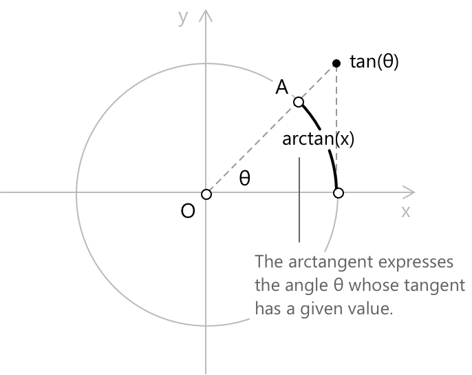
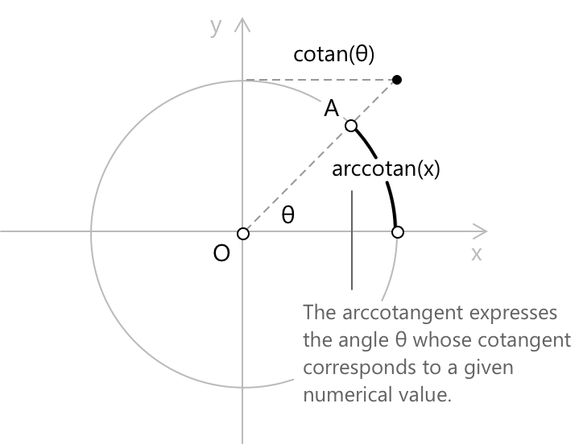

Арктангенс та арккотангенс
Означення арктангенса
У одиничному колі тангенс кута \( \theta \) можна візуалізувати як довжину відрізка, дотичного до кола в точці перетину з його кінцевою стороною, виміряного вздовж вертикальної дотичної в точці \( (1, 0) \). Арктангенс виконує зворотний процес: заданому дійсному числу \( x \) він відповідає єдиний кут \( \theta \) на проміжку \( \left(-\pi/2, \pi/2\right) \), тангенс якого дорівнює \( x \). Цей геометричний зв'язок ілюструє, як тангенс і арктангенс взаємопов'язані як функція та її обернена, де кожна з них змінює ролями кут і відношення.

Пов'язавши арктангенс із поняттям функції, ми можемо формально виразити зв'язок між тангенсом і арктангенсом наступним чином:
\[\arctan(x) = \theta \quad \iff \quad \tan(\theta) = x\] \[ \theta \in \left(-\frac{\pi}{2}, \frac{\pi}{2}\right)\]
Арктангенс встановлює відповідність між дійсним числом \( x \) та єдиним кутом \( \theta \) на проміжку \( \left(-\pi/2, \pi/2\right) \), тангенс якого дорівнює \( x \). Обмеження цим проміжком є необхідним, оскільки функція тангенса є періодичною і, отже, не є ін'єктивною на всій своїй області визначення. Обмеживши її проміжком \( \left(-\pi/2, \pi/2\right) \), отримують строго зростаючу бієкцію, яка має визначену обернену функцію. Цей взаємний зв'язок підсумовується тотожністю:
\[ \tan(\arctan(x)) = x \quad \forall \, x \in \mathbb{R} \]
-
Коли значення тангенса \( x \) є додатним, відповідний кут \( \theta \) лежить у першій чверті.
-
Коли \( x \) є від'ємним, кут лежить у четвертій чверті; а коли \( x = 0 \), кут дорівнює нулю.
Коли \( x \) нескінченно зростає, відповідний кут \( \theta \) наближається до асимптотичних значень:
\[\lim_{x \to +\infty} \arctan(x) = \frac{\pi}{2}\] \[ \lim_{x \to -\infty} \arctan(x) = -\frac{\pi}{2}\]
Ці значення ніколи не досягаються, оскільки жодне скінченне значення \( x \) не має тангенса, що дорівнює \( \pm \pi/2 \). Вони відповідають напрямкам, у яких кінцева сторона кута стає паралельною осі y.
Таблиця значень арктангенса
Нижче наведено деякі загальновідомі значення \( \arctan(x) \) для вибраних аргументів, корисні в різних застосуваннях тригонометрії:
\[ \begin{align} x &\to -\infty &\quad& \arctan(x) \to -\pi/2 \\[6pt] x &= -\sqrt{3} &\quad& \arctan(-\sqrt{3}) = -\pi/3 \\[6pt] x &= -1 &\quad& \arctan(-1) = -\pi/4 \\[6pt] x &= -1/\sqrt{3} &\quad& \arctan(-1/\sqrt{3}) = -\pi/6 \\[6pt] x &= 0 &\quad& \arctan(0) = 0 \\[6pt] x &= 1/\sqrt{3} &\quad& \arctan(1/\sqrt{3}) = \pi/6 \\[6pt] x &= 1 &\quad& \arctan(1) = \pi/4 \\[6pt] x &= \sqrt{3} &\quad& \arctan(\sqrt{3}) = \pi/3 \\[6pt] x &\to +\infty &\quad& \arctan(x) \to \pi/2 \end{align} \]
Функція арктангенса
Функція арктангенса \( f(x) = \arctan(x) \) кожному дійсному числу \( x \in \mathbb{R} \) присвоює єдиний кут \( \theta \in \left(-\pi/2, \pi/2\right) \), тангенс якого дорівнює \( x \). Її графіком є неперервна, строго зростаюча крива, що має дві горизонтальні асимптоти, а саме \( y = -\pi/2 \) та \( y = \pi/2 \). Ця функція є оберненою до тангенса, обмеженого його головною областю визначення \( \left(-\pi/2, \pi/2\right) \), на якій тангенс є строго зростаючим і бієктивним.
- Область визначення: \( x \in \mathbb{R} \)
- Область значень: \( y \in \left(-\frac{\pi}{2},\, \frac{\pi}{2}\right) \)
- Арктангенс є непарною функцією, що означає: \[ \arctan(-x) = -\arctan(x) \quad \forall \, x \in \mathbb{R} \] Це випливає безпосередньо з того факту, що сам тангенс є непарною функцією, і відображає симетрію графіка \( \arctan \) відносно початку координат.
Бієктивна функція є одночасно ін'єктивною та сюр'єктивною, тобто для кожного \( y \in B \) існує єдине \( x \in A \), таке що \( f(x) = y \).
Аналітичний вираз арктангенса
Арктангенс також можна записати за допомогою функцій синуса та косинуса, що підкреслює його геометричну основу в одиничному колі та зв'язок з іншими оберненими тригонометричними функціями. Виходячи з тотожності: \[ \tan(\theta) = \frac{\sin(\theta)}{\cos(\theta)} \] можна розглянути прямокутний трикутник, у якому кут \( \theta \) задовольняє \( \tan(\theta) = x \), тобто відношення протилежного катета до прилеглого дорівнює \( x \). Прийнявши прилежлий катет рівним \( 1 \), а протилежний катет рівним \( x \), гіпотенуза за теоремою Піфагора дорівнює \( \sqrt{1 + x^2} \), так що:
\[\sin(\theta) = \frac{x}{\sqrt{1 + x^2}}\] \[ \cos(\theta) = \frac{1}{\sqrt{1 + x^2}}\]
Інвертування цих співвідношень дає два еквівалентних вирази для арктангенса: \[ \arctan(x) = \arcsin\!\left(\frac{x}{\sqrt{1 + x^2}}\right) \] \[ \arctan(x) = \arccos\!\left(\frac{1}{\sqrt{1 + x^2}}\right) \]
Ця еквівалентність часто є корисною в математичному аналізі та в аналітичних виводах, оскільки вона дозволяє переписувати вирази, що містять арктангенс, через арксинус або арккосинус, залежно від того, яка форма спрощує обчислення.
Формула додавання для арктангенса
Арктангенс задовольняє помітну тотожність, яка виражає арктангенс суми через окремі арктангенси. Для будь-яких двох дійсних чисел \( x \) та \( y \), що задовольняють \( xy < 1 \), виконується наступна тотожність:
\[ \arctan(x) + \arctan(y) = \arctan\!\left(\frac{x + y}{1 - xy}\right) \]
Ця формула випливає безпосередньо з формули додавання для функції тангенса. Якщо \( \alpha = \arctan(x) \) та \( \beta = \arctan(y) \), тоді \( \tan(\alpha) = x \) та \( \tan(\beta) = y \), і формула додавання тангенсів дає:
\[ \tan(\alpha + \beta) = \frac{\tan(\alpha) + \tan(\beta)}{1 – \tan(\alpha)\tan(\beta)} = \frac{x + y}{1 - xy} \]
Застосування арктангенса до обох частин рівняння дає шукану тотожність. Умова \( xy < 1 \) гарантує, що \( \alpha + \beta \in \left(-\pi/2, \pi/2\right) \), що є головним проміжком арктангенса; коли \( xy > 1 \), необхідно додати поправочний член \( \pm\pi \) залежно від знака \( x \).
Особливо корисний окремий випадок виникає при \( y = 1/x \) при \( x > 0 \), так що \( xy = 1 \). У цій ситуації загальна формула не застосовується безпосередньо, але результат можна перевірити, зауваживши, що \( \arctan(x) \) та \( \arctan\!\left(1/x\right) \) є додатковими кутами. Тотожність набуває вигляду:
\[ \arctan(x) + \arctan\!\left(\frac{1}{x}\right) = \frac{\pi}{2} \qquad (x > 0) \]
Це випливає з того факту, що для \( x > 0 \) маємо \( \operatorname{arccot}(x) = \arctan\!\left(1/x\right) \), а співвідношення додатності \( \arctan(x) + \operatorname{arccot}(x) = \pi/2 \) виконується для всіх додатних \( x \).
Означення арккотангенса
В одиничному колі котангенс кута \( \theta \) можна візуалізувати як довжину відрізка, дотичного до кола в точці, де його перетинає кінцевий бік кута, виміряного вздовж горизонтальної дотичної в точці \( (0, 1) \). Арккотангенс виконує зворотний процес: заданому дійсному числу \( x \) він повертає єдиний кут \( \theta \) на проміжку \( (0, \pi) \), котангенс якого дорівнює \( x \). Цей геометричний зв'язок ілюструє, як котангенс та арккотангенс взаємопов'язані як функція та її обернена, де кожна з них міняє місцями ролі кута та відношення.

Пов'язавши арккотангенс із поняттям функції, ми можемо формально виразити зв'язок між котангенсом та арккотангенсом наступним чином:
\[\operatorname{arccot}(x) = \theta \quad \iff \quad \cot(\theta) = x\] \[ \quad \theta \in (0, \pi)\]
Арккотангенс встановлює відповідність між дійсним числом \( x \) та єдиним кутом \( \theta \) на проміжку \( (0, \pi) \), котангенс якого дорівнює \( x \). Обмеження цим проміжком є необхідним, оскільки функція котангенса є періодичною і, отже, не є ін'єктивною на всій своїй області визначення; обмеживши її до \( (0, \pi) \), отримують строго спадну бієкцію, яка має визначену обернену функцію. Цей взаємний зв'язок підсумовується тотожністю: \[ \cot(\operatorname{arccot}(x)) = x \quad \text{для всіх } x \in \mathbb{R} \]
- Коли значення котангенса \( x \) є додатним, відповідний кут \( \theta \) лежить у першій чверті.
- коли \( x \) є від'ємним, кут лежить у другій чверті; а коли \( x = 0 \), кут дорівнює \( \frac{\pi}{2} \).
Коли \( x \) необмежено зростає, відповідний кут \( \theta \) наближається до асимптотичних значень:
\[ \lim_{x \to +\infty} \operatorname{arccot}(x) = 0\] \[ \qquad \lim_{x \to -\infty} \operatorname{arccot}(x) = \pi\]
Ці значення ніколи не досягаються, оскільки жодне скінченне значення \( x \) не має котангенса, що дорівнює \( 0 \) або \( \pi \); вони відповідають напрямкам, у яких кінцева сторона кута стає паралельною осі x.
Табличні значення арккотангенса
Нижче наведено деякі загальновідомі значення \( \operatorname{arccot}(x) \) для обраних аргументів, корисні в різних застосуваннях тригонометрії: \[ \begin{align} x &\to -\infty &\quad& \operatorname{arccot}(x) \to \pi \\[6pt] x &= -\sqrt{3} &\quad& \operatorname{arccot}(-\sqrt{3}) = 2\pi/3 \\[6pt] x &= -1 &\quad& \operatorname{arccot}(-1) = 3\pi/4 \\[6pt] x &= -1/\sqrt{3} &\quad& \operatorname{arccot}(-1/\sqrt{3}) = 5\pi/6 \\[6pt] x &= 0 &\quad& \operatorname{arccot}(0) = \pi/2 \\[6pt] x &= 1/\sqrt{3} &\quad& \operatorname{arccot}(1/\sqrt{3}) = \pi/3 \\[6pt] x &= 1 &\quad& \operatorname{arccot}(1) = \pi/4 \\[6pt] x &= \sqrt{3} &\quad& \operatorname{arccot}(\sqrt{3}) = \pi/6 \\[6pt] x &\to +\infty &\quad& \operatorname{arccot}(x) \to 0 \end{align} \]
Функція арккотангенса
Функція арккотангенса \( f(x) = \operatorname{arccot}(x) \) кожному дійсному числу \( x \in \mathbb{R} \) ставить у відповідність єдиний кут \( \theta \in (0, \pi) \), котангенс якого дорівнює \( x \). Її графік є неперервною, строго спадною кривою, що має дві горизонтальні асимптоти, а саме \( y = 0 \) та \( y = \pi \). Ця функція є оберненою до котангенса, обмеженого його головною областю визначення \( (0, \pi) \), на якій котангенс є строго спадним і бієктивним.
-
Область визначення: \( x \in \mathbb{R} \)
-
Область значень: \( y \in (0, \pi) \)
-
Арккотангенс задовольняє тотожність: \[ \operatorname{arccot}(-x) = \pi - \operatorname{arccot}(x) \quad \forall x \in \mathbb{R} \] Це випливає з того факту, що котангенс є непарною функцією, і відображає симетрію графіка \( \operatorname{arccot} \) відносно точки \( \left(0,\, \pi/2\right) \).
Аналітичний вираз арккотангенса
Арккотангенс також можна виразити через функції арктангенса, синуса та косинуса, що підкреслює його взаємодоповнюючий характер у родині обернених тригонометричних функцій. Виходячи з тотожності:
\[ \cot(\theta) = \frac{\cos(\theta)}{\sin(\theta)} \]
можна розглянути прямокутний трикутник, у якому \( \cot(\theta) = x \), тобто відношення прилеглого катета до протилежного дорівнює \( x \). Прийнявши протилежний катет за \( 1 \), а прилеглий за \( x \), гіпотенуза за теоремою Піфагора дорівнює \( \sqrt{1 + x^2} \), так що:
\[\sin(\theta) = \frac{1}{\sqrt{1 + x^2}}\] \[ \cos(\theta) = \frac{x}{\sqrt{1 + x^2}}\]
Інвертування цих співвідношень дає два еквівалентних вирази для арккотангенса: \[ \begin{align} \operatorname{arccot}(x) &= \arcsin\!\left(\frac{1}{\sqrt{1 + x^2}}\right) \\[6pt] \operatorname{arccot}(x) &= \arccos\!\left(\frac{x}{\sqrt{1 + x^2}}\right) \end{align} \]
Ще дві тотожності безпосередньо пов'язують арккотангенс з арктангенсом. Для додатних значень \( x \) маємо:
\[ \operatorname{arccot}(x) = \arctan\!\left(\frac{1}{x}\right) \]
оскільки котангенс і тангенс одного й того самого кута є взаємно оберненими. Більш загальна тотожність, що виконується для всіх \( x \in \mathbb{R} \): \[ \operatorname{arccot}(x) = \frac{\pi}{2} – \arctan(x) \]
що випливає з взаємодоповнюючого зв'язку між тангенсом і котангенсом: для будь-якого кута \( \theta \) маємо \( \cot(\theta) = \tan\!\left(\frac{\pi}{2} - \theta\right) \), тому інвертування обох частин безпосередньо дає цю тотожність.